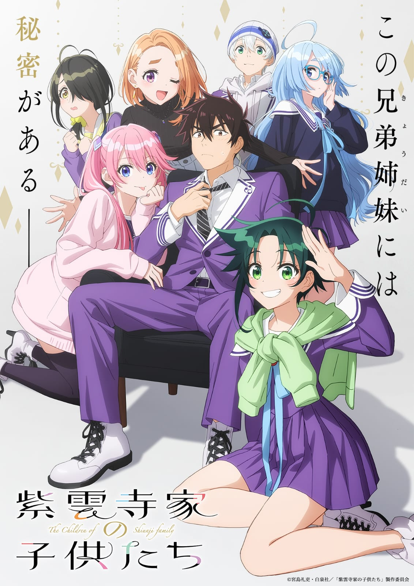
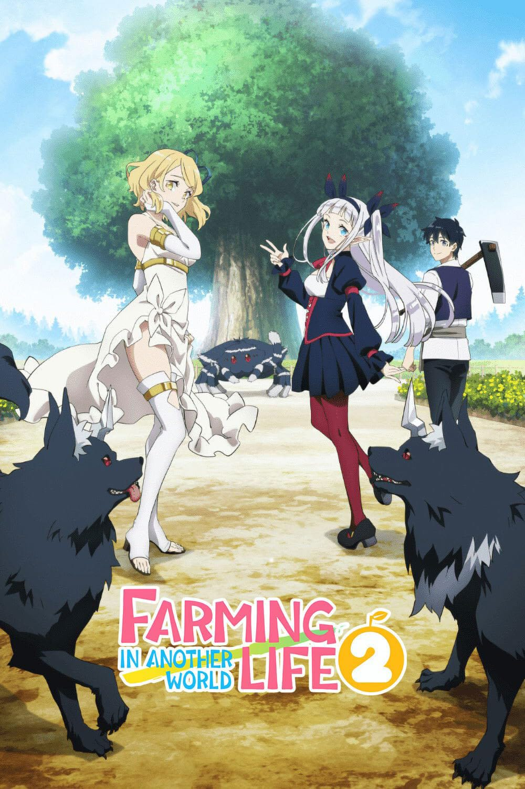
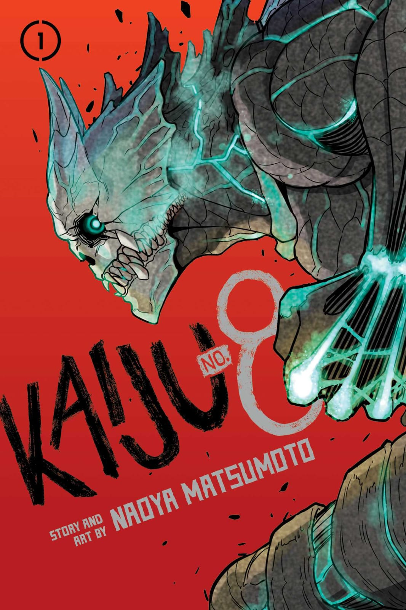
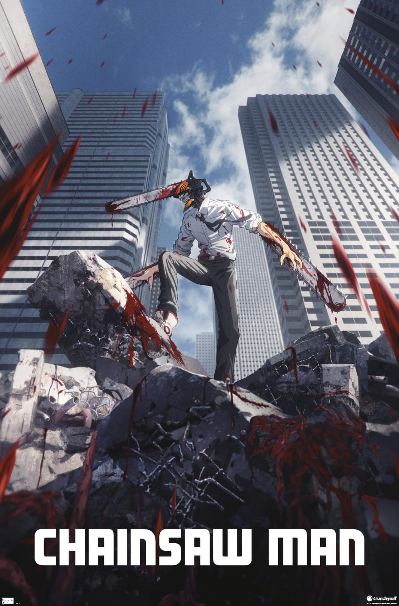
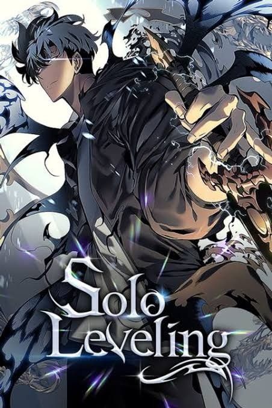

#01
#01
Death Note
A high school prodigy discovers a notebook capable of killing anyone whose name is written in it, sparking a global cat-and-mouse game with a brilliant detective.
A personal, curated chronicle of every world, battle, and story I have experienced across anime history.
An indexed record of completed anime, organized chronologically by watch order.
#01
A high school prodigy discovers a notebook capable of killing anyone whose name is written in it, sparking a global cat-and-mouse game with a brilliant detective.

#02Seven wealthy siblings face an unexpected revelation about their family heritage that reshapes their bonds and daily lives.
 #03
#03
After humanity is turned to stone for thousands of years, a scientific genius awakens to rebuild civilization from zero using the power of science.
 #04
#04
The remnants of humanity live inside massive walled cities to survive against monstrous man-eating Titans, uncovering dark truths about their world.
 #05
#05
A kindhearted young boy joins the Demon Slayer Corps to avenge his slaughtered family and find a cure for his sister, who was transformed into a demon.

#06Reincarnated with an almighty farming tool, a man starts a peaceful agrarian settlement deep inside a mythical forest that grows into a thriving community.

#07A monster-corpse cleanup worker unexpectedly gains the ability to transform into a powerful kaiju, reigniting his dream of joining the Defense Force.
 #08
#08
Returning to his isolated island hometown for his childhood friend's funeral, a young man becomes trapped in a deadly time loop involving sinister shadow clones.
 #09
#09
An occult-believing boy and a ghost-believing girl make a wager that drags both of them into bizarre encounters with both aliens and spirits.

#10Merged with his pet chainsaw devil, an impoverished young man joins the Public Safety Devil Hunters to pursue his humble dreams amidst bloody chaos.

#11Known as the world's weakest hunter, a young man survives a lethal double dungeon and receives a mysterious system interface that allows him alone to level up infinitely.
My Anime Archive is a standalone personal catalog built to document my complete anime watch history. Unlike standard streaming platforms or commercial databases, this space serves as an introspective vault for tracking series completions, genres, and reflections across different eras of storytelling.
Every entry represents a fully completed journey—ranging from dark psychological mind games to high-stakes supernatural battles and quiet slices of life.